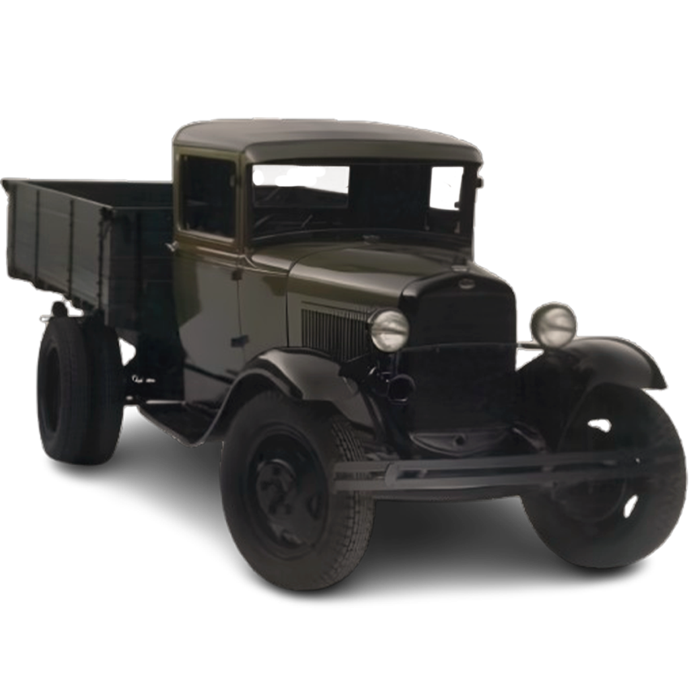

Назначение техники: Грузовой автомобиль. На нём возили все – от боеприпасов, личного состава и продовольствия, до буксировки пушек и специальной техники (санитарная помощь). «Полуторки» часто использовали в силах противовоздушной обороны, монтируя на них зенитные или прожекторные установки, а также счетверенные пулеметы Максим.
Преимущества техники: Главными качествами довоенной «полуторки» были её простота и надёжность. Работала на любом бензине, имела хорошую проходимость. Из металла делали лишь раму, трансмиссию, мосты и двигатель, все остальное – деревянное. Тормоза только задние, довольно легкая, что не давало ей утонуть на плохой дороге. Но в годы войны ГАЗ-АА упростили до предела - выпускалась военная версия без бамперов, глушителей, убрались тормозные механизмы с передних колес, кабина стала деревянной, лишилась дверей (их заменяли брезентовые пологи). Водители ценили её за простоту конструкции и надежность: сборка не требовала высокой квалификации, а ремонт легко проводили в полевых условиях. Это было важно в грозные военные годы.
Вклад техники в Победу: На 22 июня 1941 года грузовики ГАЗ-АА составляли почти 60 процентов автопарка Красной армии. Этот автомобиль сыграл ключевую роль в тыловом обеспечении советских войск. ГАЗ-АА стал одним из символов победы в Великой Отечественной войне и легендарной «Дороги жизни» в Ленинграде.
Места памяти техники: Памятник «Полуторка» (Памяти машины-солдата) на мемориальном комплексе «Дорога жизни» (г. Всеволожск, Ленинградская область)
Подвиг водителей «Дороги жизни»
«Каждая полуторная машина везет продовольствие на 10 тысяч пайков, на 10 тысяч человек. Водитель, спасай эти жизни!» - такая табличка встречала каждого водителя, съезжающего на лёд легендарной ладожской «Дороги жизни». Мысль об этом гнала вперед почти 5 тысяч шоферов, обслуживавших трассу, на протяжении двух зим ее работы. Всего за самую страшную блокадную зиму 1941-1942 годов работавшие на «Дороге жизни» водители доставили в Ленинград 361 тысяч тонн грузов, в том числе 262 тысяч тонн продовольствия, и вывезли полмиллиона людей - в основном женщин и детей.
После того как вокруг Ленинграда в сентябре 1941 года сомкнулось блокадное кольцо, воды Ладожского озера оставались единственной транспортной артерией (кроме воздушной), по которой еще осуществлялось снабжение 3-ёх миллионного города. Суда Ладожской флотилии, несмотря на обстрелы, курсировали по нему ежедневно. Однако было очевидно, что как только на озере встанет лед, сообщение с городом прервется. Чтобы не допустить этого, решено было реализовать казавшееся почти невозможным - и с конца октября на Ладоге начались работы по подготовке ледовой трассы, которая очень скоро станет известна в Ленинграде и за его пределами как легендарная «Дорога жизни». 22 ноября 1941 года на лед выехала первая колонна из 60 грузовиков ГАЗ-АА 388-го отдельного автомобильного батальона. Именно легендарные «полуторки», маломощные грузовики ГАЗ- АА, по причине своей относительно небольшой массы оказались наиболее пригодными для такой дороги и открыли движение по Ладоге. В ледяных торосах, на не укатанной еще трассе, они зачастую буксовали. В первое время водитель, сбившийся с пути, рисковал расстаться с жизнью - шансов на то, что в плохой видимости, в метели, а тем более в ночной темноте или утреннем полумраке его хватятся и обнаружат, были невелики. Большинство водителей, заплутавших в первые дни на незнакомой, заснеженной дороге, замерзали и погибали. В кабинах советских машин того периода просто- напросто отсутствовала печка.
В целях светомаскировки фары предписывалось гасить - фронт зачастую приближался к «Дороге жизни» на расстояние 15 км, над ней курсировала немецкая авиация. Позднее, в следующие зимы, на Ладоге появится настоящая инфраструктура — посты техпомощи, пункты обогрева и питания, регулировщицы, стоящие через равные промежутки пути, и знаки, но в конце осени - начале зимы 1941-го года водители, выбирая между опасностью попасть под обстрел немецкой авиации и уйти с трассы в условиях плохой видимости и замерзнуть насмерть на ладожских просторах чаще всего выбирали первое и включали фары. Опасности, ждавшие шоферов, которые первыми прокладывали путь по льду в осажденный город, не ограничивались риском сбиться с дороги. Первые автоколонны отправлялись в рейс с полупустыми баками - горючего должно было впритык хватить на путь в один конец и с распахнутыми дверями машин на малой скорости. Все эти меры, призванные не только уберечь водителей, но и сэкономить бесценные в военных условиях ресурсы, говорили о постоянно подстерегавшей опасности - провалиться под не успевший достаточно окрепнуть, не так давно вставший ладожский лёд. Бензин и антифриз для первых рейсов на «большую землю» были доставлены в город на самолетах. Если машине суждено было погибнуть, драгоценное топливо не должно было пойти вместе с ней под лед, а водителю надо было успеть покинуть кабину. С тем же расчетом в колонне предписывалось строгое соблюдение стометровой дистанции - на случай, если лед под впереди идущей машиной не выдержит нагрузки.
При этом большинство водителей, обеспечивавших движение на «Дороге жизни», сами были ленинградцами. Многие из тех, кто ежедневно доставлял в город продовольствие, жили по блокадной норме. По установившейся вскоре практике в город машины шли, груженые продуктами, и в первую очередь мукой. Оттуда с людьми, которых нужно было бы вывезти из голодающего города. Большую часть пассажиров составляли ленинградские дети. И если открытые двери могли спасти водителя, который вез в машине груз, то в случае, когда полуторка, переполненная людьми, проваливалась под лед или попадала под обстрел, эта мера, увы, спасти не могла. Многие из тех, кто благодаря ладожской дороге обрел вторую жизнь, на этом пути стали свидетелями того, как следовавшая за ними или прямо перед ними в колонне машина, с такими же пассажирами, как и они, мгновенно уходила под лед, в особенности при обстрелах. Помогла спасти «Дорога жизни» и многие хранившиеся в городе исторические ценности.
Первая автомобильная «навигация» закрылась только в середине весны, 21 апреля 1942-го года. К этому моменту лед, в разгар зимы достигший метровой толщины, начал таять. Почти на протяжении всего пути машины следовали по воде. У самого берега их груз иногда приходилось переносить на руках, подъехать к берегам вплотную толщина льда уже не позволяла. Однако до тех пор, пока оставался шанс доставить в город продовольствие, движение продолжалось. Короткие минуты отдыха ждали водителей только тогда, когда машины в очередной раз загружались. Благодаря их работе с 25 декабря в городе норма хлеба по рабочей карточке была увеличена на 100 г, по карточкам служащих иждивенцев и детей - на 75 г. Для многих ленинградцев, это стало спасением. «Дорога жизни» продолжала работу до марта 1943 года, всего на ней работало больше 20 тысяч водителей. Сколько из них отдали свои жизни, чтобы мог выжить блокадный Ленинград, точно не известно до сих пор.